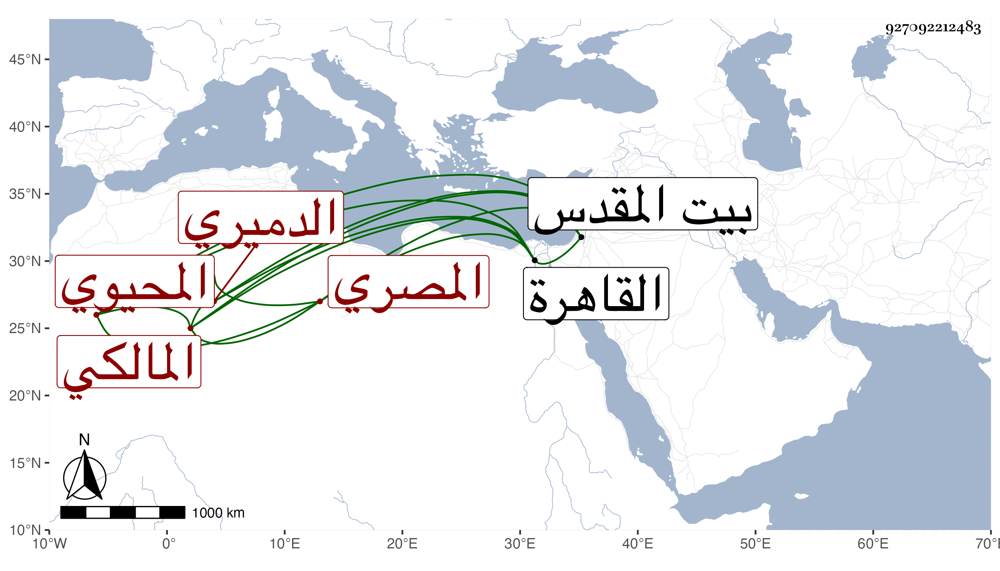

0902Sakhawi.DawLamic.ITO20230111-ara1.EIS1600.927092212483
Biography ID: 927092212483
687
عبد القادر بن أحمد بن محمد بن أحمد بن علي المحيوي بن الشهاب الدميري الأصل المصري المالكي أخو عبد الغني الماضي وأبوهما ويعرف كأبيه بابن تقي . ولد في جمادى الثانية سنة أربع وعشرين وثمانمائة بالقاهرة ونشأ بها فحفظ القرآن وابن الحاجب الفرعي والأصلي بل وكتابه في العربية . واشتغل في الفقه على الزينين عبادة وطاهر وأبي القسم النويري وأذن له ولازم الكافياجي في الأصلين والعربية وغيرها من العلوم العقلية وتميز فيها وكذا انتفع في ذلك بالسيف بن الخوندار الحنفي ، وناب في القضاء عن الولوي السنباطي فمن بعده ، وحج مرتين جاور في ثانيتهما أشهرا وزار بيت المقدس وأشير إليه بالفضيلة والبراعة وكتب على الفتيا بل استقر في تدريس المالكية بالشيخونية بعد موت الحسام بن حريز وتقلل من ثم من تعاطى الأحكام مع مباشرة ما تلقاه شركة لأخيه عن أبيهما من تدريس وغيره إلى أن ولي القضاء الأكبر بعد صرف البرهان اللقاني بتعيين الزيني زكريا وكان حاله فيه أحسن من حاله في النيابة وزاد في الانخفاض مع أرباب الدولة ونحوهم وطرح الشهامة معهم وفي أيامه مات أبو سهل بن عمار والسنهوري فناب عن ولد أولهما في تدريس الصالح وعن ولد ثانيهما في تدريس البرقوقية بل كان رام استقلاله بها وشاحح في معلوم النيابة وتحدث الناس في كون اللقاني ناب عن ابن المخلطة في المؤيدية مجانا ولكن الفرق بينهما خصوصا في الفقه ظاهر وكذا عرض له عارض صار بسببه يهذي ويبرز ويصدر منه ما ينقص مثله بحيث كاد أن يتزحزع عن الولاية وعين الشافعي بعض نواب المالكية للقضاء فلم يلتفت السلطان لذلك مع تكرر العارض منه مرة بعد أخرى بل ترادف احسانه إليه لظنه أن سبب ذلك الأعراض ممن تعاطى ما يلائمه . . مات بعد تعلل بضعة عشر يوما بالاسهال في ثامن عشر ذي الحجة سنة خمس وتسعين ودفن من الغد عند أبيه بمحل سكنهما رحمه الله وعفا عنه .
